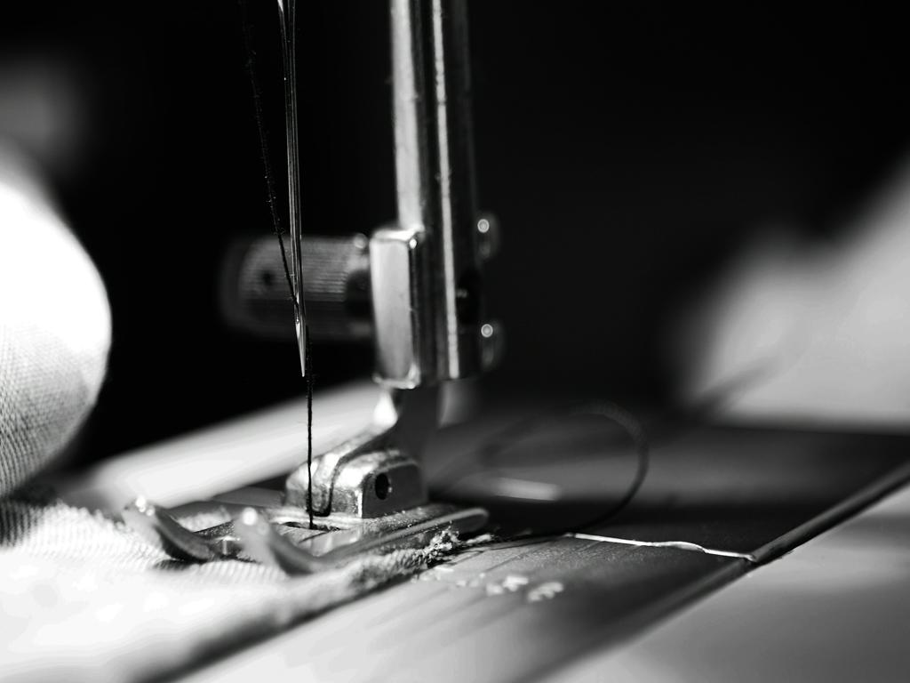

Introduction

Here's where I'll be dropping everything sewing and textile related that I've either done, or am thinking of doing. As there's not much, you can tell my brain isn't doing much on the thinking. Probably because I'm thinking about coding now ALL THE TIME. I blame myself for signing up and enjoying this class but I also blame Elle for being a patient instructor.